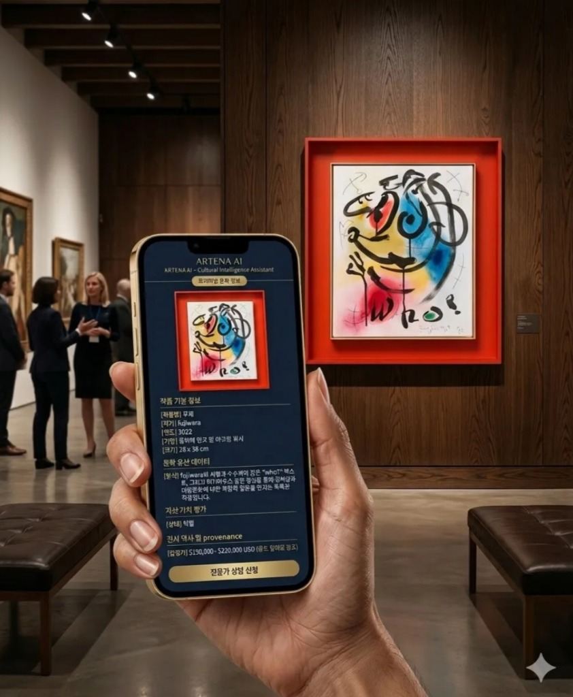

문화 자산의 진정성, 상태, 가치를 해석하는 독보적인 문화 지능 AI 인프라
ArtXpark는 문화 자산의 진정성, 상태, 가치 해석을 위한 Vertical AI + Data Infrastructure 기업입니다.
ART + ATHENA — Cultural Intelligence Engine
기존 AI = 데이터 분석 | ARTENA = 문화 자산의 의미와 가치를 해석하는 AI
* ARTENA는 전체 시스템의 Core Engine(두뇌)으로 기능합니다.
MARKET PROBLEM
“문제는 작품이 아니라 시장 구조에 있습니다”
데이터 인프라 부재가 시장 비효율의 근본 원인
CORE INTELLIGENCE LAYER
문화 자산을 이해하는 AI가 아니라 “해석하고 판단하는 AI”
Generic AI ≠ ARTENA
ARTENA = Vertical AI for Culture + Data Infrastructure Native AI
ARTENA는 ArtXpark 전체 시스템의 "Core Engine"이며,
기존 AI가 데이터 분석에 그친다면 ARTENA는 의미와 가치를 해석합니다.
작품 상태 / 환경 / 이력
데이터 정제 및 표준화
4-layer 통합 해석
진정성 / 가치 / 의미
문화 자산의 가치 실현
ARTENA AI
단일 ARTENA AI 엔진, 계층별 접근 권한 분리

개인 컬렉터 · 아트 애호가 · 앱 사용자
박물관 / 미술관 · 갤러리 / 경매사 · 기관 투자자
PHYSICAL INFRASTRUCTURE
운송이 아닌 데이터 생성 인프라
물리적 환경 통제 및 최소 안정화 구역 설정
광학 센서, 3D 등을 통한 정밀 물리 데이터 수집
진동 통제 및 온습도 제어를 통한 리스크 방어
수집 데이터의 엣지 전처리 및 클라우드 AI 연동
AUTONOMOUS REALITY CAPTURE
문화재, 건축물, 대규모 야외 전시 등 인간이 접근하기 어려운 환경의 정밀 데이터를 생성합니다. 드론 라이다(LiDAR) 및 고해상도 포토그래메트리를 통해 건축 및 유적지의 디지털 트윈을 구축합니다.
갤러리, 수장고, 박물관 내부를 자율 주행하며 반복적이고 정밀한 공간/작품 스캐닝을 수행합니다. 인간의 개입을 최소화하면서 24시간 지속적인 상태 데이터 및 환경 맵핑 데이터를 축적합니다.
FOUNDER & TEAM
IP Strategy Advisor
Legal Advisor
Regulatory & Finance Advisor